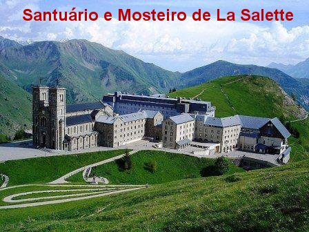
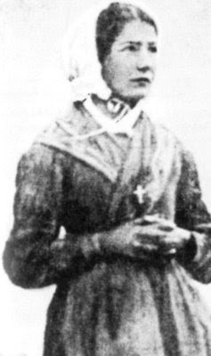
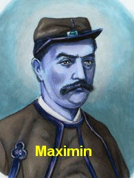
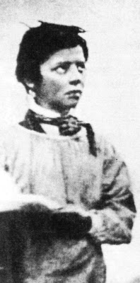
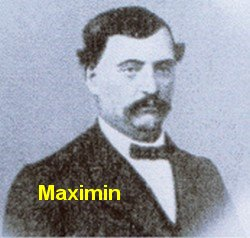
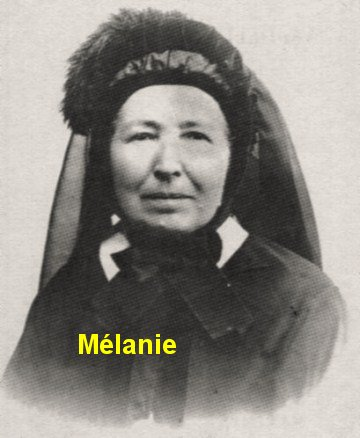
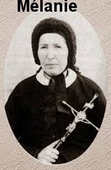
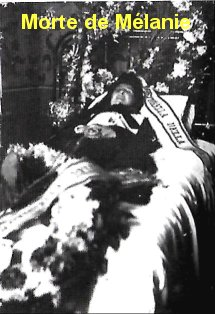

APÓS A APARIÇÃO
A vida de Melanie e de Maximin não foi um Céu aberto em plena Europa pecadora.
Na verdade eles sempre tiveram o consolo e a inspiração de NOSSA 
Dois meses depois das Aparições, já somavam mais de duzentos eclesiásticos que tinham interrogado os videntes no próprio local do celeste acontecimento. A naturalidade e a humildade das crianças deixavam muito bem impressionados os observadores experientes e prudentes que lá apareceram.
O Padre Félix Repelin, professor de retórica do Seminário Menor de Embrun, durante três horas experimentou os videntes para ver se eles contavam o SEGREDO. Ele sugeriu a Mélanie que a Dama que lhe apareceu poderia ser um mau espírito... Mélanie respondeu no ato: “Mas senhor, o demônio não usa uma Cruz”!
O eclesiástico insistiu, e lembrou-lhe que o demônio levou NOSSO SENHOR sobre o Templo durante a tentação no deserto... Respondeu Mélanie: “Não senhor, o bom DEUS não deixaria o maligno levar a Sua Cruz desse modo. Foi pela Cruz que ELE salvou o mundo”.
O Padre Félix depois escreveu: “A segurança desta criança, a profundidade da sua resposta, da qual ela talvez não perceba toda a beleza, me fecharam a boca”.

- “Mélanie, teu Anjo da Guarda sabe teu segredo”?
- “Sim senhor”.
- “Portanto, tem alguém que o sabe”...
- “Mas meu Anjo da Guarda não pertence ao povo”.
- “Mas se os Anjos da Guarda o sabem, nós acabaremos um dia sabendo também”...
- “Então faça com que o seu Anjo lhe conte”. Respondeu Mélanie sorrindo.
Da mesma forma, Padre Félix e
o Cônego Repelin procuraram arrancar de Maximin, alguma coisa referente ao
SEGREDO. Não 
Um caso arquétipo aconteceu entre Maximin e o Padre Dupanloup, que se tornou bispo de Orleans, e que também foi um dos chefes do movimento contra a proclamação do dogma da infalibilidade Papal, durante o Concílio Vaticano I.
Propositalmente o Padre passou alguns dias na companhia do menino Maximin, tentando que ele lhe revelasse o SEGREDO de NOSSA SENHORA. Numa mesa, colocou uma pilha de moedas de ouro, que deslumbrou o menino, pois sendo de família muito pobre, nunca tinha visto aquilo. Tentadoramente ofereceu-lhe as moedas em troca da violação do compromisso com a MÃE DE DEUS, com o pretexto de que ele fazia aquilo caridosamente, para ajudar Maximin e a família dos pais dele. A reação do menino foi de tal integridade, que o Padre Dupanloup saiu confundido, escrevendo posteriormente: “Eu senti que a dignidade da criança era bem maior do que a minha”!
O CAMINHO DE MAXIMIN

Maximin lhe respondeu
através de uma carta: “Se Sua Excelência
tem a intenção de me imobilizar antecipadamente, de não me deixar 
O Bispo o expulsou do Seminário. Maximin procurou estudar e trabalhar em Paris e também em Le Havre. Mas, em todos os lugares seguia-o uma série de hostilidades de origem anticatólica. Covardemente, para dificultar os seus dias espalhavam que ele era inculto, estúpido, bêbado, dissoluto e instável. O tal Bispo de Grenoble, maldosamente escreveu ao Ministro do Governo da Instrução Pública, que era outro ferrenho anticatólico, acusando o vidente de ser “mentiroso e grosseiro, além de inventor de histórias, e que por essas mesmas razões, expulsei-o do Seminário”.
Maximin alistou-se no corpo dos zuavos pontifícios (soldado da infantaria pontifícia), que era um regimento de voluntários a serviço do Papa. Mas em pouco tempo, logo se afastou, por que a vida de caserna não correspondia ao seu ideal. Nos seus últimos anos de vida, foi acolhido por uma família de Paris. Na Revolução Comunista de 1871, a família perdeu a casa e ele ficou na rua, dormindo ao relento, como indigente. Foi quando contraiu a doença que provocou a sua morte. Na miséria, Maximin entregou sua alma a DEUS, na sua cidade natal de Corps, no dia 1º de Março de 1875, com 39 anos de idade. Deixou o exemplo de uma vida moral íntegra e uma indomável determinação em fazer a vontade de NOSSA SENHORA, acima da vontade dos homens. Seu coração foi depositado na Basílica de La Salette, e seu corpo sepultado no pequeno Cemitério de Corps, onde jaz atualmente.
O PERCURSO DE MÉLANIE

Todavia, o tal Monsenhor Ginoulhiac, aquele mesmo Bispo de Grenoble que perseguiu Maximin, lhe exigiu que ela silenciasse para sempre sobre a Mensagem de La Salette, e não divulgasse o SEGREDO quando chegasse à data autorizada pela VIRGEM MARIA. Como Mélanie também não aceitou esta imposição, no dia da sua profissão solene, o Bispo propositalmente a enviou para visitar a Abadia da Grande Chartreuse. Na volta, percebeu que suas companheiras tinham feito “os votos” e ela ficara de fora. Monsenhor Ginoulhiac, o tal Bispo, aconselhou-a a ingressar no Carmelo de Darlington, na Inglaterra. Era um exílio, mas Mélanie aceitou em espírito de obediência.

Todavia Mélanie não sabia das tramas do abominável Bispo de Grenoble, que ordenou ao Sacerdote Diretor Espiritual dela, sob pena de interdito (ameaça de proibição de uso dos bens e direitos eclesiásticos), que lhe entregasse todas as cartas da religiosa que tivessem matéria de consciência. Quando se aproximou a data de 1858, ela se sentiu como se estivesse num cárcere, e por isso, agindo com plena decisão, enviou cartas às autoridades locais, jogando-as por cima do muro da clausura para que alguém pegasse, pedindo auxílio e urgente proteção. O senhor Bispo de Exham recebeu uma carta e tomou conhecimento do fato, outorgando-lhe as devidas licenças, e o Papa Pio IX confirmou a saída dela do claustro.
Voltou à França,
mas nunca encontrou sossego, sendo sempre pressionada por autoridades religiosas,
para não divulgar as Mensagens da Aparição. 
Em 1858, como ordenara NOSSA SENHORA, ela enviou o texto integral do SEGREDO ao Papa Pio IX. Além disso, providenciou e conseguiu que o SEGREDO fosse publicado em Marselha no ano de 1860. Conseguiu também que fosse publicado em Lecce, na Itália, no ano de 1879, com o imprimatur do Servo de DEUS Monsenhor ZOLA.
Ameaçada de excomunhão por um Bispo adversário de La Salette, Mélanie se instalou no sul da Itália, protegida por Bispos simpatizantes da Aparição.
Na Itália foi co-fundadora da Irmandade das “Religiosas do Divino Zelo”, que entre as suas diversas finalidades constava também rezar pela vinda dos APÓSTOLOS DOS ÚLTIMOS TEMPOS. A referida Ordem Religiosa se espalhou pelo mundo, inclusive, tem Casas Religiosas aqui no Brasil.
Mélanie faleceu em Altamura, província de Bari, na Itália, como havia predito, ou seja, sozinha num quarto, na noite do dia 14 para 15 de Dezembro de 1904, com a idade de 72 anos. Os vizinhos, emocionados, descreveram que naquela noite ouviram um suave e melodioso cântico angélico que vinha do seu apartamento.
FIM
CONVITE
Este Site foi construído pelo Apostolado dos Sagrados Corações. Clique aqui ou no endereço abaixo para visitar o nosso PORTAL. Nele encontrará uma apreciável quantidade de Sites, todos eles fundamentados na Sagrada Escritura, na Tradição Cristã, nas Manifestações Sobrenaturais e na Vida e Obra dos Santos. São Sites sobre o CRIADOR, o ESPÍRITO SANTO, JESUS DE NAZARÉ, sobre NOSSA SENHORA, os ANJOS DO SENHOR e Sites que descrevem a trajetória existencial de diversos SANTOS.
http://www.apostoladosagradoscoracoes.com/
=E-MAIL=
Desejando comunicar-se conosco, favor clicar na figura abaixo:

"EMPRESAS DE BUSCAS"